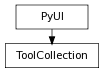

class counterpart of mel function toolCollection
This command creates a tool button collection. Collections are parented to the current default layout if no parent is specified with the -p/parent flag. As children of the layout they will be deleted when the layout is deleted. Collections may also span more than one window if the -gl/global flag is used. In this case the collection has no parent and must be explicitly deleted with the ‘deleteUI’ command when it is no longer wanted.
Returns a string list giving the long names of all the items in this collection. Flag can have multiple arguments, passed either as a tuple or a list.
Derived from mel command maya.cmds.toolCollection
Set the collection to have no parent layout. This flag must be specified when the collection is created and can not be queried or edited. Consequently, global collections must be explicitly deleted.
Derived from mel command maya.cmds.toolCollection
Returns the number of items that are in this collection.
Derived from mel command maya.cmds.toolCollection
Select the specified collection item. If queried will return the name of the currently selected collection item.
Derived from mel command maya.cmds.toolCollection
Select the specified collection item. If queried will return the name of the currently selected collection item.
Derived from mel command maya.cmds.toolCollection